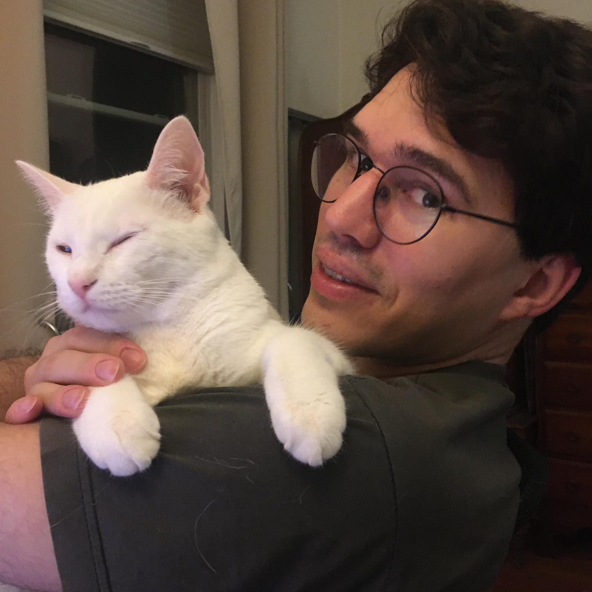

Juan Dodyk

Juan Dodyk
I am an Assistant Professor in Political Science and Environmental Studies at Washington University in St. Louis. I study political economy, with a focus on climate policy, business lobbying, and formal political theory.
I received my Ph.D. in Government from Harvard University.
You can find my research and teaching materials below, or download my CV.
Research interests
- Climate policy and politics
- Lobbying and money in politics
- Formal political theory
Education
Ph.D. in Government, 2025
B.Sc. in Mathematics, 2017